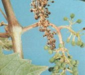
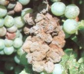
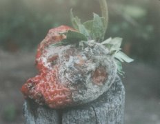
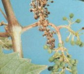
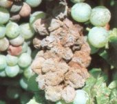

 
Szürkepenészes rothadás
Botrytis cinerea
A paprika levelei turgorjukat veszítve lógnak, a termés a kocsány
felől, vagy a talajjal érintkező végéről fertőződik. A foltok gyorsan terjednek,
majd lágyrothadás formájában a termés tönkremegy.
- A paradicsom bogyóin 1-5 mm átmérőjű kerek sárgás fehér
gyűrűk keletkeznek, csapadékos időben bekövetkezik a lágyrothadás, a foltok
felületén szürkés penészgyep is kialakul.
- A hagymafejek nyaki része besüpped, puha lesz, mivel alatta a húsos
levelek rothadnak. A pikkelylevelek üvegesen áttetszővé válnak. A levelek alatt
porzó, szürke penészgyep alakul ki.
- A szőlőt nedves, párás körülmények között virágzástól
szüretig veszélyezteti a szürkerothadás. A sebzéseken át a kórokozó könnyen behatol a növény
szöveteibe, ahol virágzáskor hiányos megtermékenyülést (madárkás fürtöt),
éréskor szürke penészbevonatot (macskás fürt) képez.
Védekezés:
- Állománypermetezésre a következő készítmények
valamelyike javasolható:
  |